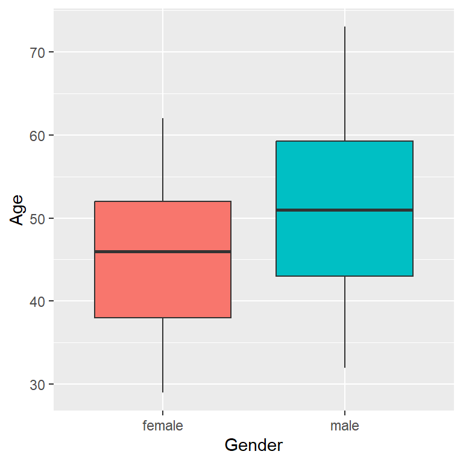
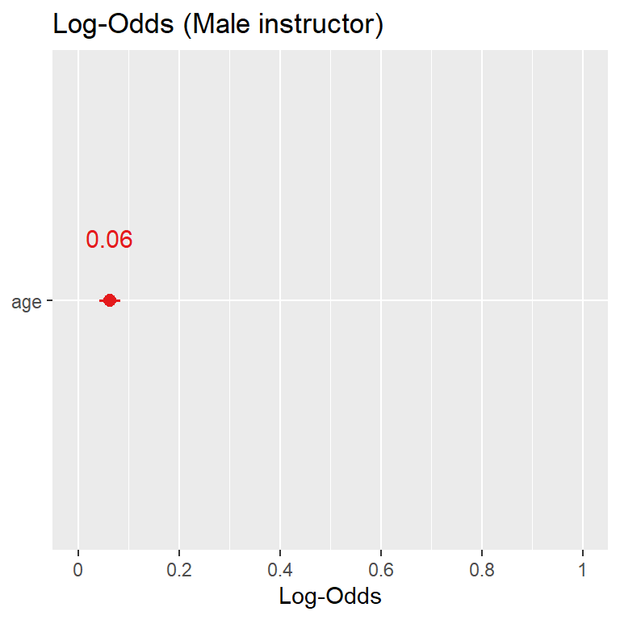
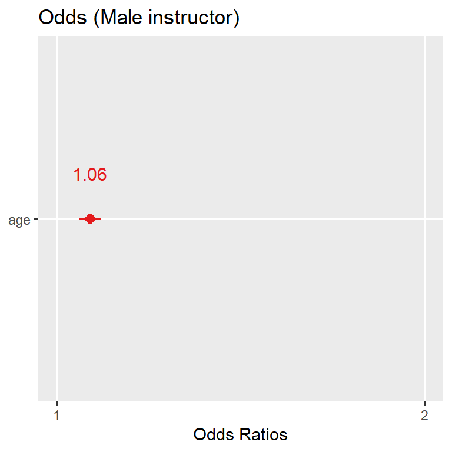
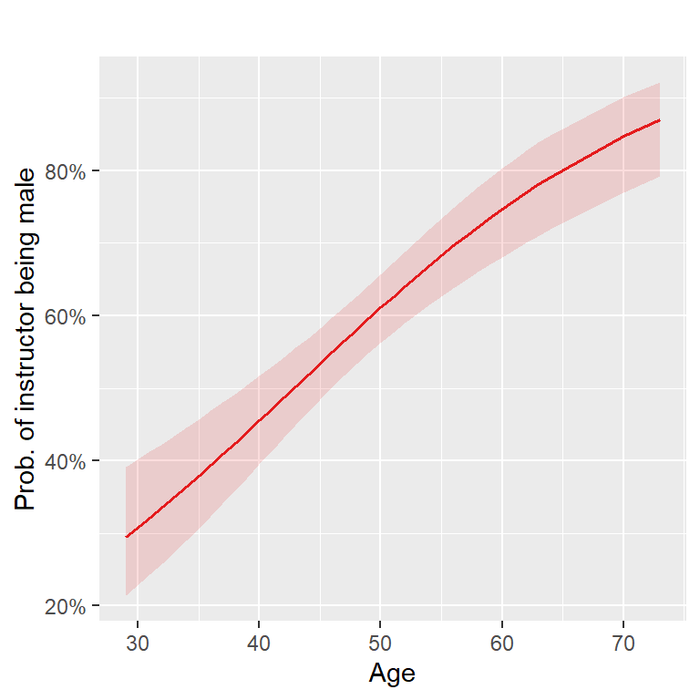
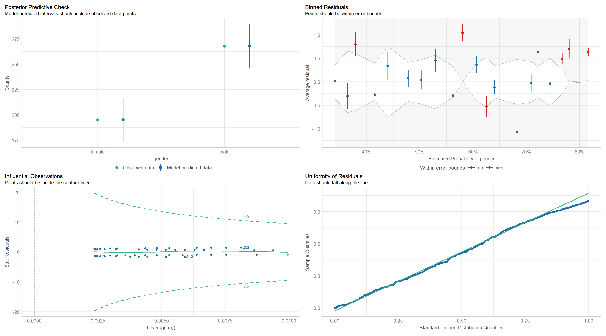
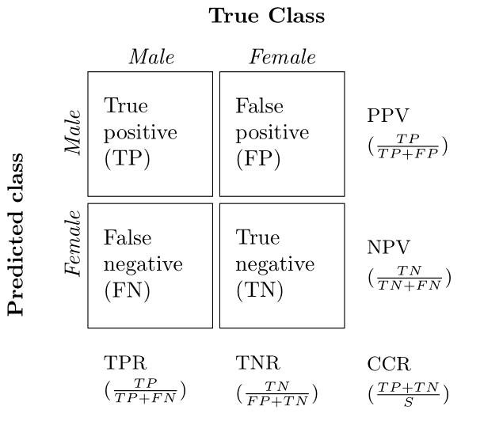
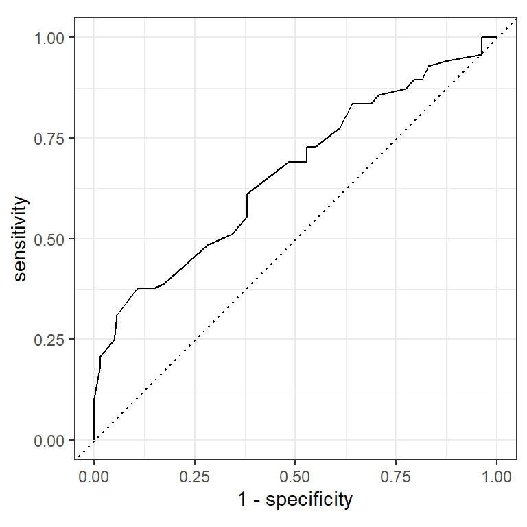
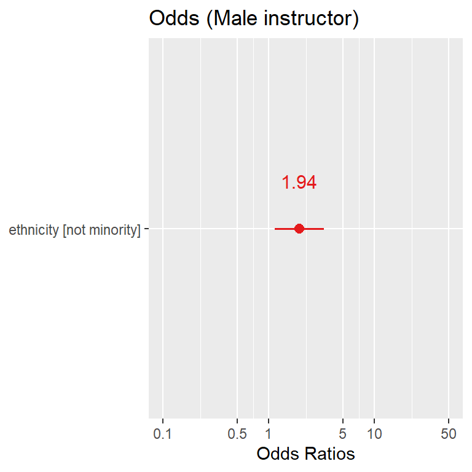

Week 7: Generalised Linear Models
1 Introduction
In previous weeks we looked at modelling data using linear regression models were we had:
- a continuous response variable \(y\) and
- one or more explanatory variables \(x_1, x_2,\ldots, x_p\), which were numerical/categorical variables.
Recall that for data \((y_i, x_i), ~ i = 1,\ldots, n\), where \(y\) is a continuous response variable, we can write a simple linear regression model as follows:
\[y_i = \alpha + \beta x_i + \epsilon_i, ~~~~ \epsilon_i \sim N(0, \sigma^2),\] where
- \(y_i\) is the \(i^{th}\) observation of the continuous response variable;
- \(\alpha\) is the intercept of the regression line;
- \(\beta\) is the slope of the regression line;
- \(x_i\) is the \(i^{th}\) observation of the explanatory variable; and
- \(\epsilon_i\) is the \(i^{th}\) random component.
Thus, the full probability model for \(y_i\) given \(x_i\) (\(y_i | x_i\)) can be written as
\[y_i | x_i \sim N(\alpha + \beta x_i, \sigma^2),\]
where the mean \(\alpha + \beta x_i\) is given by the deterministic part of the model and the variance \(\sigma^2\) by the random part. Hence we make the assumption that the outcomes \(y_i\) are normally distributed with mean \(\alpha + \beta x_i\) and variance \(\sigma^2\). However, what if our response variable \(y\) is not a continuous random variable?
1.1 Generalised linear models
The main objective this week is to introduce Generalised Linear Models (GLMs), which extend the linear model framework to response variables that don’t follow the normal distribution. GLMs can be used to model non-normal continuous response variables, but they are most frequently used to model binary, categorical or count data. The generalised linear model can be written as:
\[\begin{align} y_i &\sim f(g(\boldsymbol{\mu}_i)) \nonumber \\ \boldsymbol{\mu}_i &= \mathbf{x}_i^\top \boldsymbol{\beta}, \nonumber \end{align}\]where the response \(y_i\) is predicted through the linear combination \(\boldsymbol{\mu}_i\) of explanatory variables by the link function \(g(\cdot)\), assuming some distribution \(f(\cdot)\) for \(y_i\), and \(\mathbf{x}_i^\top\) is the \(i^{th}\) row of the design matrix \(\boldsymbol{X}\). For example, the simple linear regression model above for a continuous response variable has the normal distribution distribution as \(f(\cdot)\), with corresponding link function equal to the Identity function, that is, \(g(\boldsymbol{\mu}_i) = \boldsymbol{\mu}_i\).
This week we will learn how to model outcomes of interest that take one of two categorical values (e.g. yes/no, success/failure, alive/dead), i.e.
- binary, taking the value 1 (say success, with probability \(p_i\)) or 0 (failure, with probability \(1-p_i\)) or
In this case, the distribution of \(y_i\) is assumed to be binomial Bin\((1,p_i)\). Hence, a binary response variable \(y_i\) has a binomial distribution with corresponding link function \(g(\cdot)\) , e.g. the logit link function, that is
\[g(p_i) = \log \left(\frac{p_i}{1 - p_i} \right),\]
which is also referred to as the log-odds (since \(p_i ~ / ~ 1-p_i\) is an odds ratio). Why is such a transformation required when looking at a binary response variable? Well here we are interested in modelling the probability of success \(p_i\), and as we know probabilities must be between 0 and 1 \(\left(p_i \in [0, 1]\right)\). So if we want to model the probability of success using a linear model we need to ensure that the probabilities obtained are between 0 and 1. However, if we just use the identity link function, such that
\[p_i = \mathbf{x}_i^\top \boldsymbol{\beta},\] we would need to ensure that in some way \(\mathbf{x}_i^\top \boldsymbol{\beta} \in [0, 1]\), that is, the linear combination of the explanatory variables and their corresponding regression coefficients was between 0 and 1. Hence some restrictions of some sort would need to be put in place to ensure this was the case. However, if we use the logit link function, such that
\[\log \left(\frac{p_i}{1 - p_i} \right) = \mathbf{x}_i^\top \boldsymbol{\beta},\]
no restrictions need to be in place on our estimates of the parameter vector \(\boldsymbol{\beta}\), since the inverse of the logit link function will always gives us valid probabilities since
\[p_i = \frac{\exp\left(\mathbf{x}_i^\top \boldsymbol{\beta}\right)}{1 + \exp\left(\mathbf{x}_i^\top \boldsymbol{\beta}\right)} ~~~ \in [0, 1].\]
This linear regression model with a binary response variable and logit link function is referred to as logistic regression. As such, when it comes to looking at binary response variables we shall be looking at odds ratios and probabilities of success/failure. The table below is a reminder of the distribution and link function used for the normal model we have previously looked at as well as the logistic regression model we shall be examining for the rest of this week.
| Model | Random component | Systematic component | Link function |
|---|---|---|---|
| Normal | \(y_i\overset{\text{indep}}\sim \mbox{N}(\mu_i,\sigma^2),\) | \(\boldsymbol{x}_i^\top\boldsymbol{\beta} =\beta_0 + \beta_1x_i + \beta_2x_i + \ldots\) | \(g(\mu_i)=\mu_i\) |
| Logistic | \(y_i\overset{\text{indep}}\sim \mbox{Bin}(1,p_i),\) | \(\boldsymbol{x}_i^\top\boldsymbol{\beta} =\beta_0+ \beta_1x_i + \beta_2x_i + \ldots\) | \(g(\mu_i) = \log \left( \frac{p_i}{1-p_i} \right)\) |
Required R packages
Before we proceed, load all the packages needed for this week:
2 Logistic regression with one numerical explanatory variable
Here we shall begin by fitting a logistic regression model with one numerical explanatory variable. Let’s return to the evals data from the moderndive package that we examined in previous weeks.
2.1 Teaching evaluation scores
Student feedback in higher education is extremely important when it comes to the evaluation of teaching techniques, materials, and improvements in teaching methods and technologies. However, there have been studies into potential bias factors when feedback is provided, such as the physical appearance of the teacher; see Economics of Education Review for details. Here, we shall look at a study from student evaluations of \(n=463\) professors from The University of Texas at Austin.
Previously, we looked at teaching score as our continuous response variable and beauty score as our explanatory variable. Now we shall consider gender as our response variable, and hence shall have a binary response variable (female/male). We will examine if there is any difference in gender by age of the teaching instructors within the evals data set.
First, let’s start by selecting the variables of interest from the evals data set:
Code
evals.gender <- evals %>%
select(gender, age)Now, let’s look at a boxplot of age by gender to get an initial impression of the data:

ggplot(data = evals.gender,
aes(x = gender, y = age, fill = gender)) +
geom_boxplot() +
labs(x = "Gender", y = "Age") +
theme(legend.position = "none")Here we can see that the age of male teaching instructors tends to be higher than that of their female counterparts. Now, let’s fit a logistic regression model to see whether age is a significant predictor of the odds of a teaching instructor being male or female.
2.2 Log-odds
To fit a logistic regression model we will use the generalised linear model function glm and set the argument family = binomial. The logistic regression model with gender as the response and age as the explanatory variable is given by:
model <- glm(gender ~ age, data = evals.gender,family = binomial)This model uses the logit link function by default.
To use a non-default or link, pass in as an argument to binomial(). For example if we wanted to use the probit link function we could specify the following argument:
Now, let’s take a look at the summary produced from our logistic regression model using the tidy function from the broom library:
| term | estimate | std.error | statistic | p.value |
|---|---|---|---|---|
| (Intercept) | -2.6979460 | 0.5119379 | -5.270066 | 1e-07 |
| age | 0.0629647 | 0.0105852 | 5.948386 | 0e+00 |
Firstly, the baseline category for our binary response is female. This is due to the default baseline in R being taken as the one which comes first alphabetically, which can be seen from the levels function:
levels(evals.gender$gender)[1] "female" "male" This means that estimates from the logistic regression model are for a change on the log-odds scale for males in comparison to the response baseline females. That is
where \(p = \textrm{Prob}\left(\textrm{Male}\right)\) and \(1 - p = \textrm{Prob}\left(\textrm{Female}\right)\).
Hence, the log-odds of the instructor being male increase by 0.06 for every one unit increase in age.
This provides us with a point estimate of how the log-odds changes with age, however, we are also interested in producing a 95% confidence interval for these log-odds. This can be done by setting the option conf.int = TRUE within the tidy() function:
| term | estimate | std.error | statistic | p.value | conf.low | conf.high |
|---|---|---|---|---|---|---|
| (Intercept) | -2.6979460 | 0.5119379 | -5.270066 | 1e-07 | -3.7196499 | -1.7097067 |
| age | 0.0629647 | 0.0105852 | 5.948386 | 0e+00 | 0.0425879 | 0.0841436 |
Notice that we could have omitted the argument conf.level = 0.95 since this is the default confidence level used in the tidy() function. Thus, unless you need a confidence level other than the 95% CI, you can leave this argument with the default setting as will do in the following exercises.
The point estimate for the log-odds is 0.06, which has a corresponding 95% confidence interval of (0.04, 0.08). This can be displayed graphically using the plot_model function from the sjPlot package by simply passing our model as an argument:
Code
plot_model(model, show.values = TRUE, transform = NULL,
title = "Log-Odds (Male instructor)", show.p = FALSE)
Some of the interesting arguments that can be passed to the plot_model function are:
-
show.values = TRUE/FALSE: Whether the log-odds/odds values should be displayed; -
show.p = TRUE/FALSE: Adds asterisks that indicate the significance level of estimates to the value labels; -
transform: A character vector naming the function that will be applied to the estimates. The default transformation usesexpto display the odds ratios, whiletransform = NULLdisplays the log-odds; and -
vline.color: colour of the vertical “zero effect” line.
Further details on using plot_model can be found here.
2.3 Odds
Typically we would like to work on the odds scale as it is easier to interpret an odds-ratio as opposed to the log-odds-ratio. To obtain the odds we simply exponentiate the log-odds, that is
\[\begin{align} \frac{p}{1-p} &= \exp\left(\alpha + \beta \cdot \textrm{age} \right), \nonumber \end{align}\]| term | estimate | std.error | statistic | p.value |
|---|---|---|---|---|
| (Intercept) | 0.07 | 0.51 | -5.27 | 0 |
| age | 1.06 | 0.01 | 5.95 | 0 |
On the odds scale, the value of the intercept (0.07) gives the odds of a teaching instructor being male given their age = 0, which is obviously not a viable age for a teaching instructor, and hence why this value is very close to zero. For age we have an odds of 1.06, which indicates that for every 1 unit increase in age, the odds of the teaching instructor being male increase by a factor of 1.06.
So how is this calculated? Let’s look at the odds-ratio obtained from instructors aged 51 and 52 years old, that is, a one unit difference:
\[\begin{align} \frac{\mbox{Odds}_{\mbox{age=52}}}{\mbox{Odds}_{\mbox{age=51}}} &= \left(\frac{\frac{p_{\mbox{age=52}}}{1 - p_{\mbox{age=52}}}}{\frac{p_{\mbox{age=51}}}{1 - p_{\mbox{age=51}}}}\right) \\ &= \frac{\exp\left(\alpha + \beta \cdot 52\right)}{\exp\left(\alpha + \beta \cdot 51\right)} = \exp\left(\beta \cdot (52 - 51)\right) \\ &= \exp\left(0.06\right) = 1.06. \nonumber \end{align}\]For example, the odds of a teaching instructor who is 45 years old being male is given by
\[\begin{align} \frac{p}{1-p} &= \exp\left(\alpha + \beta \cdot \textrm{age}\right) = \exp\left(-2.7 + 0.06 \cdot 45\right) = 1.15. \nonumber \end{align}\]This can be interpreted as the chances of an instructor who is 45 being male are 15% greater than them being female. We can obtain a 95% confidence interval for the odds by simply exponentiating the lower and upper bounds of our log-odds interval:
| term | estimate | std.error | statistic | p.value | conf.low | conf.high |
|---|---|---|---|---|---|---|
| (Intercept) | 0.07 | 0.51 | -5.27 | 0 | 0.02 | 0.18 |
| age | 1.06 | 0.01 | 5.95 | 0 | 1.04 | 1.09 |
Hence the point estimate for the odds is 1.06, which has a corresponding 95% confidence interval of (1.04, 1.09). This can be displayed graphically using the plot_model function from the sjPlot package by simply passing our model as an argument as well as removing transform = NULL (the default transformation is exponential):
Code
plot_model(model, show.values = TRUE,
title = "Odds (Male instructor)", show.p = FALSE, axis.lim = c(1, 1.5))
Note: axis.lim is used to zoom in on the 95% confidence interval.
2.4 Probabilities
Since we have used the logit link function to link the linear predictor \(\alpha + \beta \cdot \textrm{age}\) to the probabilities of being a male, we can then obtain back the probability \(p = \textrm{Prob}(\textrm{Male})\) by using the inverse-logit transformation:
\[\begin{align} p &= \frac{\exp\left(\alpha + \beta \cdot \textrm{age} \right)}{1 + \exp\left(\alpha + \beta \cdot \textrm{age} \right)} . \nonumber \end{align}\]For example, the probability of a teaching instructor who is 52 years old being male is
\[\begin{align} p &= \frac{\exp\left(\alpha + \beta \cdot \textrm{age} \right)}{1 + \exp\left(\alpha + \beta \cdot \textrm{age} \right)} =\frac{\exp\left(-2.7 + 0.06\cdot 52 \right)}{1 + \exp\left(-2.7 + 0.06\cdot 52 \right)} = 0.64, \nonumber \end{align}\]which can be computed in R using the inverse logit plogis() function from the stats library:
plogis(model$coefficients[1]
+ model$coefficients[2] * 52)(Intercept)
0.6401971 Finally, we can plot the probability of being male using sjPlot by specifying the following:
The model we have fitted
type = "pred"to plot predicted values (marginal effects) for specific model terms.The model terms of interest. Here, you can also plot the marginal effects at specific values ,e.g. selecting
age[30:60]will plot the predictions based on age-values from 30 to 60, whileage[all]will plot the predictions across all of the range of our independent variable.
Code
plot_model(model,
type = "pred",
title = "",
terms="age [all]",
axis.title = c("Age", "Prob. of instructor being male"))
Table 1 summarises the relationship between between Odds and Probabilities:
| Scale | Equivalence |
|---|---|
| Odds | \[ Odds = \mathrm{exp}(log Odds) = \dfrac{P(event)}{1-P(event)} \] |
| Probability | \[ P(event) =\dfrac{\mathrm{exp}(logOdds)}{1+\mathrm{exp}(logOdds)} = \dfrac{Odds}{1+Odds} \] |
3 Model evaluation
3.1 Diagnostic plots
As usual, now that we have fitted the model we need to assess how well the model fits the data and check whether our assumptions are met. Our assumptions can be checked as usual by using the plot() function in base R. However, we can visualize this with a much nicer and appropiate layout using the check_model() function within the performance library.
Code
library(performance)
check_model(model, panel = TRUE)
Be aware that the performance library has quite a few dependencies so check whether any package needs to be updated when you install the package for the first time.
By specifying panel = TRUE the output shows us 4 different diagnostic plots. These are:
Posterior predictive check (Top-left):Compares the observed data (in this case the number of females and males) against the predicted number of males and females using simulated data. We can look for systematic discrepancies between real and simulated data to assess the goodness of fit (see. (Gabry et al. 2019) and
check_predictions()for further details)Binned residuals (Top-right): Bin the observations based on their fitted values, and average the residual value in each bin. The plots shows the average residual values versus the average fitted value for each bin” (Gelman and Hill 2006). If the model were true, one would expect about 95% of the residuals to fall inside the error bounds (see
?binned_residualsfor more details.)Influential observations (Bottom-left): This plot is used to identify influential observations. If any points in this plot fall outside of Cook’s distance (the dashed lines) then it is considered an influential observation. See
check_outliers()for further details.Uniformity of residuals (Bottom-right): Since our response is not normally distributed, residuals are not expected to be normally distributed either. Thus, we can use QQ plots to check the uniformity of residuals, i.e. the extent to which the observed values deviate from the model expectations using simulated residuals instead of the usual Pearson residuals
3.2 Predictive performance metrics
Since our outcome of interest is a binary categorical variable, we can compute the predicted classes and evaluate how accurate our predictions are by comparing them against the observed values. To do so, we can add the predicted (fitted) values to our data with broom::augment() and classify them based on a decision threshold.
Note that we can append either the logit-scaled fitted values (by setting type.predict = c("link") or the predicted probabilities (type.predict = c("response")).
In the case of logistic regression, you typically classify these probabilities into discrete classes based on a cutoff (commonly 0.5 for binary classification). Here is an example where predicted probabilities outcomes of \(\hat{p} > 0.5\) are classified as male and as female if \(\hat{p} \leq 0.5\) .
| gender | age | .fitted | .resid | .hat | .sigma | .cooksd | .std.resid | predicted_class |
|---|---|---|---|---|---|---|---|---|
| female | 36 | 0.3938360 | -1.0006045 | 0.0058192 | 1.132909 | 0.0019126 | -1.003529 | female |
| female | 36 | 0.3938360 | -1.0006045 | 0.0058192 | 1.132909 | 0.0019126 | -1.003529 | female |
| female | 36 | 0.3938360 | -1.0006045 | 0.0058192 | 1.132909 | 0.0019126 | -1.003529 | female |
| female | 36 | 0.3938360 | -1.0006045 | 0.0058192 | 1.132909 | 0.0019126 | -1.003529 | female |
| male | 59 | 0.7343825 | 0.7857803 | 0.0047899 | 1.133280 | 0.0008746 | 0.787669 | male |
We can use these predicted classes to compute different predictive performance/evaluation metrics. To do so we can compute a confusion matrix according to the true and predicted classes:

The table can be interpreted as follows:
The correct classification rate (CCR) or accuracy describes the overall proportion of teaching instructors (males or females) that were classified correctly among all the \(S = 463\) individuals.
The true positive rate (TPR) or sensitivity (a.k.a. recall), denotes the proportion of actual female instructors that are correctly classified as females by the model.
The true negative rate (TNR) or specificity, denotes the proportion of actual males that have been classified correctly as males by the model. Note: the false positive rate (FPR) computed as (1- specificity) is another popular metric that measures the proportion of actual negatives that are incorrectly predicted as positive.
The model’s precision or positive predictive value (PPV) represents the proportion of predicted female instructors that were actually female, i.e. how many of the predicted positive cases were actually positive.
The model’s negative predictive value (NPV) represents the proportion of predicted male instructors that were actually males, i.e. how many of the predicted negative cases were actually negative.
To compute the confusion matrix we can use the conf_mat() function and use as input the data frame with the predicted and observed classes as follows:
conf_mat(pred_results,truth = gender,estimate = predicted_class) Truth
Prediction female male
female 76 60
male 119 208Rather than computing these predictive performance metrics by hand, we can take advantage of the metric_set() function from the yardstick library (loaded as part of the tidymodels ecosystem) to combine multiple metric functions together into a new function that calculates all of them at once. Then we just simply need to supply the same arguments we used for computing the confusion matrix.
# Step (1) create a set with classification metrics we want to compute
eval_metric <- metric_set(accuracy,sensitivity,specificity,ppv,npv)
# Step (2) call out the metric set and input the data containing the observed and predicted classes
eval_metric(pred_results,truth = gender,estimate = predicted_class)| .metric | .estimator | .estimate |
|---|---|---|
| accuracy | binary | 0.61 |
| sensitivity | binary | 0.39 |
| specificity | binary | 0.78 |
| ppv | binary | 0.56 |
| npv | binary | 0.64 |
We can see that our model is not doing a great job in predicting the outcome (accuracy of \(\approx\) 60%).This is due to a particularly poor performance in terms of sensitivity, i.e. roughly only 40% of truly female instructors are correctly classified as such by our mode. Despite this, our model is not doing a terrible job in terms of specificity since almost 80% of the males are actually being predicted as such.
Note that the threshold of 0.5 is common but may not always be optimal. You can adjust it based on your specific application and the desired balance between sensitivity and specificity (we will see an example of such in the next task).
3.3 ROC Curve
Another way to assess how good the model is at separating the 2 classes of the outcome is through the Receiver Operating Characteristic (ROC) curve. The ROC curve is a graphical representation used to evaluate the performance of a binary classification model. It shows the trade-off between the true positive rate (sensitivity) and the false positive rate (1 - specificity) at various threshold settings.
The threshold determines the cutoff probability for classifying a sample as positive or negative (male or female in our case).
At a cutoff \(=0\) , all the observations will be classified as positive (i.e. all the instructors are going to be classified as males since we are modelling the event \(P(male)\)).
At a cutoff \(=1\) , all the observations will be classified as negative (i.e. all the instructors are going to be classified as females corresponding to \(1 - P(male)\)).
As the threshold moves between 0 and 1, the ROC curve traces out points that show the model’s performance for various balances between TPR and FPR.
We can combine the roc_curve() function from the performance library and autoplot() function from ggplot to calculate and visualize the ROC curve. We just need to supply the true classes and the predicted probabilities (NOT the predicted classes!).

Notice that we set event_level = "second" since the default behavior of the roc_auc() function is to consider the first class of the variable genderas the event. If you recall, female appears as first due alphabetical order, and hence is treated as our reference category in our model and thus we are modelling the event \(P(male)\).
levels(pred_results$gender)[1] "female" "male" However since female appear first, we need to tell the roc_auc() that we are interested in the second class of the variables gender , i.e. male, as the event and not the other way around.
The closer the ROC curve is to the top-left corner, the better the model is at distinguishing between the positive and negative classes. This means high true positive rates (sensitivity) and low false positive rates. The closer the curve is to the diagonal line (i.e. when TPR = FPR) then the performance is no better than random guessing. We can see here that our model is doing a little bit better than just random guessing.
We can also calculate the area under the ROC curve (AUC) as a single value to summarize the model’s performance:
roc_auc(pred_results,
truth = gender,
.fitted,
event_level = "second")| .metric | .estimator | .estimate |
|---|---|---|
| roc_auc | binary | 0.66 |
The AUC ranges from 0 to 1:
AUC = 1: Perfect classifier.
AUC = 0.5: No better than random guessing.
AUC \(\leq\) 0.5: Worse than random guessing, meaning the model is consistently misclassifying.
Again, the AUC of 0.66 indicates a moderate-poor fit to the data (mainly due to miss-classifications of female instructors as we saw previously).
4 Logistic regression with one categorical explanatory variable
Instead of having a numerical explanatory variable such as age, let’s now use the binary categorical variable ethnicity as our explanatory variable.
Code
evals.ethnic <- evals %>%
select(gender, ethnicity)| gender | ethnicity |
|---|---|
| female | minority |
| female | minority |
| female | minority |
| female | minority |
| male | not minority |
Now, let’s look at a barplot of the proportion of males and females by ethnicity to get an initial impression of the data.
We can also use the tabyl function from the janitor package to display percentage data in an organized way. See ?tabyl for more details.
Code
library(janitor)
evals.ethnic %>%
tabyl(ethnicity, gender) %>%
adorn_percentages() %>%
adorn_pct_formatting() %>%
adorn_ns() # To show original counts ethnicity female male
minority 56.2% (36) 43.8% (28)
not minority 39.8% (159) 60.2% (240)
We can see that a larger proportion of instructors in the minority ethnic group are female (56.3% vs 43.8%), while the not minority ethnic group is comprised of more male instructors (60.2% vs 39.8%). Now we shall fit a logistic regression model to determine whether the gender of a teaching instructor can be predicted from their ethnicity.
4.1 Log-odds
The logistic regression model is given by:
\[\begin{align} y_i &\sim \mathrm{Bernoulli}(p_i)\\ \mathrm{logit}(p_i) &= \alpha + \beta_{\mbox{ethnicity}} \times \mathbb{I}_{\mbox{ethnicity}}(\mathrm{not~ minority}). \end{align}\]Which can be fitted in R as follows:
model.ethnic <- glm(gender ~ ethnicity,
data = evals.ethnic,
family = binomial) Here, \(y_i\) denotes the \(i\)th instructor’s gender, again, the baseline category for our binary response is female. Thus, \(p_i = \mathrm{Prob}(\mathrm{Male})\) is linked to the linear predictor through the logit link function. This means that estimates we get from fitting the logistic regression model are for a change on the log-odds scale for males (\(p_i = \textrm{Prob}(\textrm{Males})\)) in comparison to the response baseline females.
Also, the baseline category for our explanatory variable is minority, which, like gender, is done alphabetically by default by R:
levels(evals.ethnic$ethnicity)[1] "minority" "not minority"Thus, \(\alpha\) correspond to the log-odds of the instructors being a males given that they are on the minority baseline category.
Then, \(\mathbb{I}_{\mbox{ethnicity}}(\mbox{not minority})\) is an indicator function for those instructors in the not minority group and \(\beta_{\mbox{ethnicity}}\) represent the change in the log-odds of a male instructor that is not on the minority group.
Lets break this down. The model we have fitted is:
\[ \mathrm{log}\left(\dfrac{p_i}{1-p_i}\right) = \alpha + \beta_{\mbox{ethnicity}} \times \mathbb{I}_{\mathrm{ethnicity}}(\mathrm{not~ minority}) \]
\(\alpha\) is the intercept, representing the log-odds when \(\mathbb{I}_{\mathrm{ethnicity}}(\mathrm{not~ minority}) = 0\) (i.e., when the instructor is in the minority group). When the instructor belongs to the reference category
minoritythe models simplifies to: \[\mathrm{log}\left(\frac{p_i}{1-p_i}\right) = \alpha \]\(\beta_{\mathrm{ethnicity}}\) is the coefficient for the predictor \(\mathbb{I}_{\mathrm{ethnicity}}(\mathrm{not~ minority})\), which shows how the log-odds change when moving from the reference category (
minority) to the other level (not minority). When the instructor does not belong to reference category, i.e. \(\mathbb{I}_{\mathrm{ethnicity}}(\mathrm{not~ minority}) = 1\), the model becomes: \[\mathrm{log}\left(\dfrac{p_i}{1-p_i}\right) = \alpha + \beta_{\mbox{ethnicity}}\]
So, the log-odds of the instructors being male in the not minority group are \(\alpha +\beta_{\mbox{ethnicity}}\). Lets compute the model estimates and 95 % confidence intervals for the log-odds:
| term | estimate | std.error | statistic | p.value | conf.low | conf.high |
|---|---|---|---|---|---|---|
| (Intercept) | -0.25 | 0.25 | -1.00 | 0.32 | -0.75 | 0.24 |
| ethnicitynot minority | 0.66 | 0.27 | 2.44 | 0.01 | 0.13 | 1.20 |
The fitted model is:
\[\begin{align} \ln\left(\frac{\hat{p_i}}{1-\hat{p_i}}\right) &= -0.25 + 0.66 \cdot \mathbb{I}_{\mbox{ethnicity}}(\mbox{not minority}), \nonumber \end{align}\]Hence, the log-odds of an instructor being male increase by 0.66 if they are in the ethnicity group not minority, which has a corresponding 95% confidence interval of (0.13, 1.2).
This can be displayed graphically using the plot_model function from the sjPlot package by simply passing our model as an argument:
Code
plot_model(model.ethnic, show.values = TRUE, transform = NULL,
title = "Log-Odds (Male instructor)", show.p = FALSE)
4.2 Odds
On the odds scale the regression coefficients are given by
| term | estimate | std.error | statistic | p.value | conf.low | conf.high |
|---|---|---|---|---|---|---|
| (Intercept) | 0.78 | 0.25 | -1.00 | 0.32 | 0.47 | 1.27 |
| ethnicitynot minority | 1.94 | 0.27 | 2.44 | 0.01 | 1.14 | 3.33 |
The (Intercept) gives us the odds of the instructor being male given that they are in the minority ethnic group, that is, 0.78 (the indicator function is zero in that case).
The odds of the instructor being male given they are in the not minority ethnic group are 1.94 times greater than the odds if they were in the minority ethnic group.
Before moving on, let’s break down how these values are computed. First, the odds of the instructor being male given that they are in the minority ethnic group (reference category) can be obtained as follows:
Here, \(p_{(minority=1)} = \mathrm{Prob}\left(\mathrm{Male}=1 | \mathrm{minority}=1\right)\). Thus, the odds of the instructor in the minority group being a male are 0.78 the odds of an instructor being a female in the same group.
Slightly confusing right? Maybe it makes more sense to interpret this result in terms of the female group, i.e. \(\mathrm{Odds}(\mathrm{female} = 1 | \mathrm{minority} =1)\). However you must be aware that this is not a probability! so you can not simply compute \(1- \mathrm{exp}(\alpha)\). To compute this correctly, we should do as follows:
Thus, the odds of the instructor in the minority group being a female are 28% higher than the odds of an instructor being a male in the same group. However, by looking at the confidence intervals and p-value we can see that this difference is not statistically significant.
Now, let’s look a the odds-ratio of an instructor being male in the not minority group compared to the minority ethnic group.
-
First, the odds of an instructor being male given that they are in the minority ethnic group were:
\[\begin{align} \mathrm{Odds}(\mathrm{male} = 1 | \mathrm{minority} = 1) =& \dfrac{p_{(minority=1)}}{1 - p_{(minority=1)}} \\ &= \exp\left(\alpha\right) \\ &= 0.78. \nonumber \end{align}\] -
Recall that the log-odds of an instructor not belonging to the minority group (i.e.
\[\begin{align} \mathrm{Odds}(\mathrm{male} = 1 | \mathrm{minority} = 0) =& \dfrac{p_{(\mathrm{minority} = 0)}}{1- p_{(\mathrm{minority} = 0)}}\\ &= \mathrm{exp}( \alpha + \beta_{\mbox{ethnicity}}) \\ &= 1.51 \end{align}\]not minority) being a male are \(\alpha +\beta_{\mbox{ethnicity}}\). On the odds scale this is: -
Now, the odds of an instructor that is not in the minority group being male against the odds of an instructor that comes from the
\[\begin{align} \frac{\mathrm{Odds}(\mathrm{male} = 1| \mathrm{minority} = 0)}{\mathrm{Odds}(\mathrm{male} = 1| \mathrm{minority} = 1)} &= \dfrac{\frac{p_{(\mathrm{minority} = 0)}}{1- p_{(\mathrm{minority} = 0)}}}{\frac{p_{(\mathrm{minority}=1)}}{1- p_{(\mathrm{minority}=1)}}} \\ &= \frac{\mathrm{exp}( \alpha + \beta_{\mbox{ethnicity}})}{\exp\left(\alpha\right)}\\ &= \exp\left(\alpha + \beta_{\mbox{ethnicity}} - \alpha\right) \\ &= \exp\left(\beta_{\mbox{ethnicity}}\right) = \exp\left(0.66 \right) \\ &= 1.93. \nonumber \end{align}\]minoritygroup is given by the ratio of the odds we just calculated:
Which is the coefficient estimate we got from the tidy() summaries. This means that instructors that are not in the minority groups are significantly 1.93 times more likely to be males compared to instructors in the minority group.
The corresponding 95% confidence interval of (1.14, 3.33). Again, we can display this graphically using the plot_model function from the sjPlot package:
Code
plot_model(model.ethnic, show.values = TRUE,
title = "Odds (Male instructor)", show.p = FALSE)
not minority group.4.3 Probabilities
You can also use the model to predict the probability of having an instructor being male for each ethnicity group.
The probabilities of an instructor being male given they are in the minority and not minority groups are:
(Intercept)
0.4375 (Intercept)
0.6015038 Hence, the probabilities of an instructor being male given they are in the minority and not minority ethnic groups are 0.437 and 0.602, respectively.
Finally, we can use the plot_model() function from the sjPlot package to produce the estimated probabilities by ethnicity as follows:
Code
plot_model(model.ethnic, type = "pred", terms = "ethnicity", axis.title = c("Ethnicity", "Prob. of instructor being male"), title = " ")